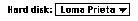
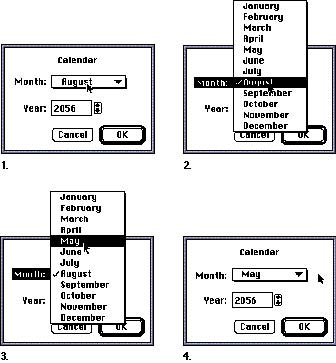
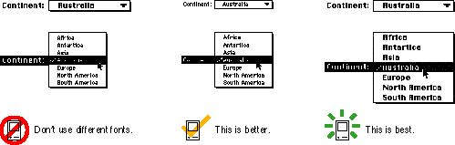
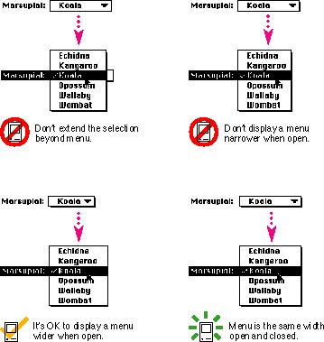
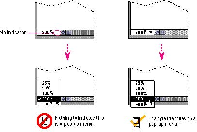

|
Standard Pop-Up MenusThe standard pop-up menu looks like a rectangle with a one-pixel border. It has a one-pixel drop shadow and contains a downward-pointing triangle similar to the triangle used to indicate a scrolling menu. Figure 4-46 shows a simple pop-up menu.Figure 4-46 A standard pop-up menu  When the user presses the mouse button while the pointer is over the pop-up menu or its label text, the triangle disappears and the other choices appear. When the mouse button is released, the triangle reappears. An exploratory press in the menu to see what's available doesn't select a new value. While the menu is open, its title is inverted. If several pop-up menus are near each other, the inverted title makes it clear which menu is being chosen from. The open menu shows a checkmark next to the current selection. When a user makes a new choice in the pop-up menu, it becomes visible as the current choice in the menu after it closes. Figure 4-47 shows four simple steps that show how a user makes a choice from a pop-up menu. Figure 4-47 Using a pop-up menu  |
|
|
Be sure to use
the same font for the closed state and the open state of a
pop-up menu. If the menu looks different when it's open,
you destroy the illusion that it is one object that expands
and contracts. It's best to use 12-point Chicago, plain in
pop-up menus. However, if it's necessary to use another
font, use it in both states of the menu to maintain a
consistent and stable appearance. In most cases you should
use a 12-point font in pop-up menus. In rare cases you may
find it necessary to use a 9-point font. However, keep in
mind that it may not be possible to localize a 9-point
font.
Figure 4-48 shows the incorrect and the correct way to use fonts in pop-up menus. |
|
Figure 4-48 Correct and incorrect use of fonts in
pop-up menus
 |
|
|
|
It's very important to create and maintain the illusion that a pop-up menu is one object. Ideally, it should be the same width when it's open as when it's closed. It's OK to have a pop-up menu be wider when it's open. In no case should you create a pop-up menu that appears narrower than the normal state. If the menu does appear narrower in the open state, the menu looks and feels like two separate objects. This appearance would destroy the sense of direct manipulation that users get as they use single objects. Figure 4-49 shows two pop-up menus that violate the guideline that a pop-up menu maintains the illusion of being one object. In the third example in Figure 4-49, the pop-up menu still appears to be one object, even though it is larger in the open state than it appears in the closed state. The final example in Figure 4-49 shows the best case of a pop-up menu that appears as though it is always one object when the user is opening, using, or closing it. |
|
Figure 4-49 Pop-up menu behavior
 When you use the pop-up menu control definition function, you always get the correct appearance and behavior for pop-up menus. However, sometimes developers find new ways and places to implement pop-up menus. If you must do this, at least maintain as much of the standard appearance of the pop-up menu as possible. For instance, always draw the triangle as a visual indicator of the menu. Otherwise there is no clue that some text in your interface is a pop-up menu. Figure 4-50 shows an example
of a hidden pop-up menu and how to make Figure 4-50 A hidden pop-up menu  |